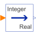

IntegerToRealConvert Integer to Real signals |

|
Information
This information is part of the Modelica Standard Library maintained by the Modelica Association.
This block computes the output y as Real equivalent of the Integer input u:
y = u;
where u is of Integer and y of Real type.
Connectors (2)
| u |
Type: IntegerInput Description: Connector of Integer input signal |
|
|---|---|---|
| y |
Type: RealOutput Description: Connector of Real output signal |